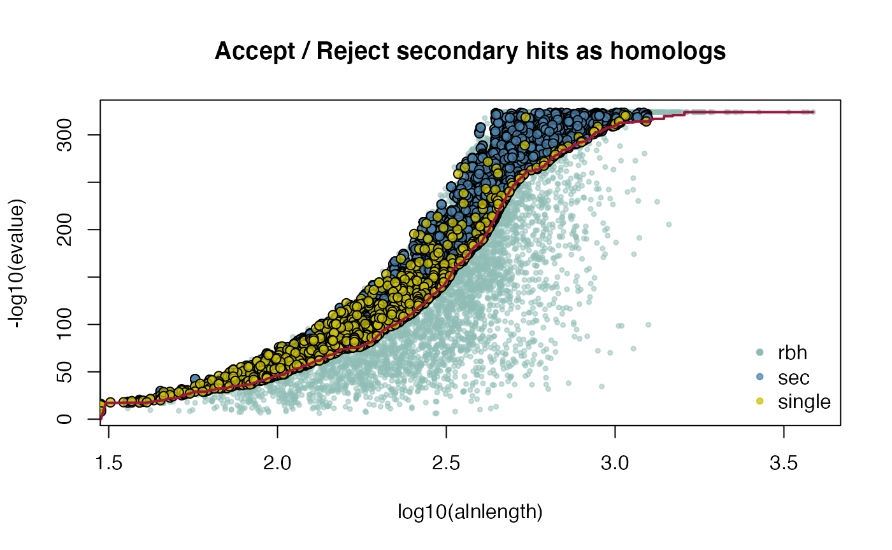

vignettes/V03WGDVignette.Rmd
V03WGDVignette.Rmdhttps://doi.org/10.1073/pnas.0501102102
https://academic.oup.com/gigascience/article/9/2/giaa004/5733640
https://pubmed.ncbi.nlm.nih.gov/15568988/
CRBHits is a reimplementation of the Conditional Reciprocal Best Hit algorithm crb-blast in R.
See the R package page for a detailed description of the install process and its dependencies https://mpievolbio-it.pages.gwdg.de/crbhits/ or have a look at the basic vignette.
#load vignette specific libraries library(CRBHits) suppressPackageStartupMessages(library(Biostrings)) suppressPackageStartupMessages(library(tidyr)) suppressPackageStartupMessages(library(dplyr)) suppressPackageStartupMessages(library(stringr)) suppressPackageStartupMessages(library(curl)) #compile LAST and KaKs_Calculator2.0 for the vignette vignette.paths <- make.vignette()
##set URLs for Arabidopis thaliana from Ensembl Plants #set Ensembl Plants URL ensemblPlants <- "ftp://ftp.ensemblgenomes.org/pub/plants/release-48/fasta/" #set Arabidopsis thaliana CDS URL ARATHA.CDS.url <- paste0("arabidopsis_thaliana/cds/", "Arabidopsis_thaliana.TAIR10.cds.all.fa.gz") #get Arabidopsis thaliana CDS ARATHA.CDS.file <- tempfile() curl::curl_download(paste0(ensemblPlants, ARATHA.CDS.url), ARATHA.CDS.file) ARATHA.cds <- Biostrings::readDNAStringSet(ARATHA.CDS.file)
##get longest isoforms #get longest isoform ARATHA.cds.longest <- isoform2longest(ARATHA.cds, "ENSEMBL")
##example to assign tandem duplicates given selfblast CRBHit pairs and gene position #get selfblast CRBHit pairs for A. thaliana ARATHA_selfblast_crbh <- cds2rbh(ARATHA.cds, ARATHA.cds, qcov = 0.5, rost1999 = TRUE, longest.isoform = TRUE, isoform.source = "ENSEMBL", threads = 2, plotCurve = TRUE, lastpath = vignette.paths[1])

#extract gene position from longest isoform CDS ARATHA.cds.longest.genepos <- cds2genepos(ARATHA.cds.longest, source = "ENSEMBL") #assign tandem duplicates for A. thaliana using a maximal duplicate distance of 5 ARATHA.cds.longest.tandemdups <- tandemdups(ARATHA_selfblast_crbh, ARATHA.cds.longest.genepos, dupdist = 5)
model = “Li”
ARATHA_ARATHA_crbh.kaks.Li <- rbh2kaks(ARATHA_selfblast_crbh$crbh.pairs,
ARATHA.cds.longest, ARATHA.cds.longest,
model = "Li",
threads = 4)Aubry S., Kelly S., Kümpers B. M., Smith-Unna R. D., and Hibberd J. M. (2014). Deep evolutionary comparison of gene expression identifies parallel recruitment of trans-factors in two independent origins of C4 photosynthesis. PLoS genetics, 10(6). https://doi.org/10.1371/journal.pgen.1004365
Charif D., and Lobry J. R. (2007). SeqinR 1.0-2: a contributed package to the R project for statistical computing devoted to biological sequences retrieval and analysis. In Structural approaches to sequence evolution (pp. 207-232). Springer, Berlin, Heidelberg. https://link.springer.com/chapter/10.1007/978-3-540-35306-5_10
Duong T., and Wand M. (2015). feature: Local Inferential Feature Significance for Multivariate Kernel Density Estimation. R package version 1.2.13. https://cran.r-project.org/web/packages/feature/
Haug-Baltzell A., Stephens S. A., Davey S., Scheidegger C. E., Lyons E. (2017). SynMap2 and SynMap3D: web-based wholge-genome synteny browsers. Bioinformatics, 33(14). https://academic.oup.com/bioinformatics/article/33/14/2197/3072872
Kiełbasa S. M., Wan R., Sato K., Horton P., and Frith M. C. (2011). Adaptive seeds tame genomic sequence comparison. Genome research, 21(3), 487-493. https://doi.org/10.1101/gr.113985.110
Li W. H. (1993). Unbiased estimation of the rates of synonymous and nonsynonymous substitution. Journal of molecular evolution, 36(1), 96-99. https://doi.org/10.1007/bf02407308
Microsoft, and Weston S. (2020). foreach: Provides Foreach Looping Construct. R package version, 1.5.1. foreach
Ooms J. (2019). curl: A Modern and Flexible Web Client for R. R package version, 4.3. curl
Pagès H., Aboyoun P., Gentleman R., and DebRoy S. (2017). Biostrings: Efficient manipulation of biological strings. R package version, 2.56.0. Biostrings
Revolution Analytics, and Weston S. (2020). doMC: Foreach Parallel Adaptor for ‘parallel’. R package version, 1.3.7. doMC
Rost B. (1999). Twilight zone of protein sequence alignments. Protein engineering, 12(2), 85-94. https://doi.org/10.1093/protein/12.2.85
Scott C. (2017). shmlast: an improved implementation of conditional reciprocal best hits with LAST and Python. Journal of Open Source Software, 2(9), 142. https://joss.theoj.org/papers/10.21105/joss.00142
Scrucca L., Fop M., Murphy T. B., and Raftery A. E. (2016) mclust 5: clustering, classification and density estimation using Gaussian finite mixture models. The R Journal, 8(1), 289-317. https://www.ncbi.nlm.nih.gov/pmc/articles/PMC5096736/
Wickham H. (2011). testthat: Get Started with Testing. The R Journal, 3(1), 5. testthat
Wickham H. (2019). stringr: Simple, Consistent Wrappers for Common String Operations. R package version, 1.4.0. stringr
Wickham H. (2020). tidyr: Tidy Messy Data. R package version, 1.1.2. tidyr
Wickham H., Hester J., and Chang W. (2020). devtools: Tools to make Developing R Packages Easier. R package version, (2.3.2). devtools
Wickham H., François R., Henry L., and Müller K. (2020). dplyr: A Grammar of Data Manipulation. R package version, 1.0.2. dplyr
Yang Z., and Nielsen R. (2000). Estimating synonymous and nonsynonymous substitution rates under realistic evolutionary models. Molecular biology and evolution, 17(1), 32-43. https://doi.org/10.1093/oxfordjournals.molbev.a026236